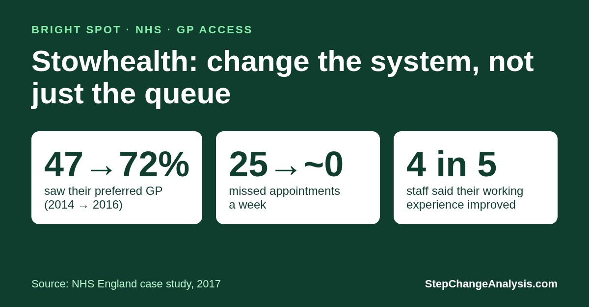

Stowhealth — A GP Access Bright Spot
Monday was busier, so more doctors worked on Monday. The wider lesson is to redesign capacity and care around patients’ needs—not simply add another queue.
What changed in the work that could explain better access, continuity and staff experience—and what would another practice need to test locally?
What was reported?

The NHS case study published in 2017 reported:
- Better continuity: among patients with a preferred GP, those who usually saw or spoke to that GP rose from 47% in 2014 to 72% in 2016.
- Fewer missed appointments: around 25 a week fell to virtually zero.
- A better working day: four in five staff said their working experience improved; fewer late finishes were reported. [1]
A separate 2023 NHS account reported a median request-closure time of 120 minutes over the preceding eight weeks, almost all contacts concluded the same day unless patients chose a later date, and 80% rating their experience as better than before. [2]
These are separate historical snapshots, not proof of uninterrupted or present-day performance. Closing a request can mean advice, a prescription, an appointment or another agreed action—not that the health problem was resolved in two hours.
What changed in the work?
The 2017 account describes four connected changes, not a single intervention whose effect was isolated. [1]
1. Shape staffing around demand
Audits found 50% more work on Mondays and three-quarters of telephone demand arriving by 1pm. More doctors therefore worked on Mondays. The team also ran a two-week telephone-consulting trial before adopting the approach.
Why it could help: put the right capacity where and when work arrives, rather than treating the rota as fixed. See variation, demand and capacity. A predictable peak is something to plan for—not evidence that Monday’s staff perform badly.
2. Make the first clinical conversation useful
Reception routed suitable requests to a minor-illness nurse, a pharmacist’s telephone list or a GP consultation. Patients entering the GP route were asked which GP they preferred. The GP could provide advice or a prescription, or arrange appropriate face-to-face care.
Why it could help: the first consultation could provide care, rather than simply admit everyone to another appointment queue. Separating different needs can reduce the apparent choice between speed and continuity; see meeting conflicting needs through separation. Preferred-clinician availability and clinical suitability still matter.
3. Resource the team and protect planned care
The practice hired an extra nurse and trained healthcare assistants to take on some nursing work, releasing nursing and GP time. Planned long-term-condition nursing appointments remained directly bookable rather than all passing through the daily request pathway.
Why it could help: reserve scarce clinical time for work needing that expertise. This was not a no-extra-resource success. Moving work only helps if the receiving team has the skills and capacity to handle it safely. See constraints and bottlenecks; the account does not prove a single binding constraint.
4. Prepare the transition and keep learning
GPs worked extra before launch to clear the old backlog. The practice consulted patient representatives, explained the changes, repeated surveys and held staff problem-solving meetings.
Why it could help: separate temporary recovery effort from the recurring operating model, and correct difficulties as they emerge. See making change workable. A new telephone pathway without enough clinical capacity could simply create a callback queue.
Fix the queue—or what creates it?
Joiner’s levels of fix offer a useful way to read the case:
- Fix the output: clear the inherited backlog.
- Fix the process: improve the route from request to useful care.
- Fix the system: change recurring staffing, roles, capacity and access arrangements so the old queue is less likely to return.
The whole-pathway view, staff involvement and learning also fit Deming’s management principles. These are retrospective interpretations, not claims that Stowhealth explicitly used Joiner, Deming, Theory of Constraints or TRIZ. The published accounts do not establish which component caused which benefit.
The transferable lesson is the connected design—not “telephone first” or buying a particular software platform. Historical improvements should not be attributed retrospectively to later digital tools.
What would confirm that it holds?
The cited accounts do not supply a continuous outcome series for this article to test. To investigate sustained improvement and transferability, check:
- Access and continuity: time from first request to appropriate care, longer waits, unmet requests and access to a familiar clinician.
- Quality and equity: repeat contacts, safety, complaints, patient effort and experience for people who cannot use digital routes.
- Workload and resources: actual staff hours, late finishes, sickness, costs and whether work or delay moved elsewhere.
- Persistence: results through busy periods, staffing changes and changes in demand, with dated records of what was implemented.
Use suitable time-ordered data and an agreed evaluation plan. A run chart or appropriate process-behaviour chart can help make patterns visible. Where suitable, step-change analysis can help assess possible level changes; it cannot establish cause, safety or permanence by itself.
How to take this further
- Bright Spot Analysis — investigate the mechanism and local conditions before trying to replicate the result.
- National GP appointments analysis — explore the wider historical picture of recorded activity and patient access; it is not a like-for-like comparison with Stowhealth.
- Right Problem — is the difficulty demand, capacity, routing, continuity or a combination?
- Right Intervention — what connected, workable change addresses the supported explanation?
- Right Measures — did care improve without shifting delay, effort or harm elsewhere?
Return to Why Improvement Programmes Fail for the complete framework.
Open the StepChange Analyzer → Explore suitable outcome data alongside the intervention history and balancing measures.
Sources and evidence notes
- NHS England: Productive work flows — Stowhealth, Suffolk (case study published in 2017). Source for the historical redesign and 2014–2016 continuity comparison.
- NHS England: Delivery plan for recovering access to primary care (2023), StowHealth example. Its eight-week closure-time snapshot is not a clinical-resolution measure or a continuous record since 2017.
This is a reported-practice Bright Spot, not an independently controlled evaluation. Framework links explain possible mechanisms; they do not validate causal attribution or guarantee replication.